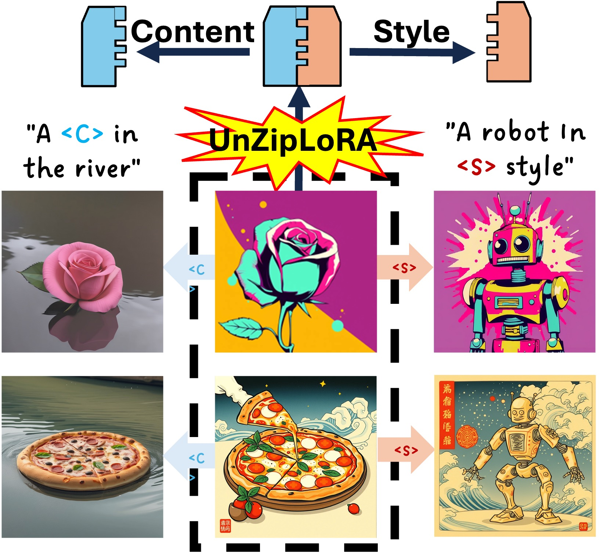

|
Aiyu Cui
I obtained my Ph.D. in Computer Science from University of Illinois Urbana-Champaign in 2024, advised by Prof. Svetlana Lazebnik. Before that, I received my B.S. degree in Computer Science from Penn State, where I was luckily working with Prof.Robert Collins and Prof. Yanxi Liu. My research focuses on generative modeling in computer vision, with a particular emphasis on utilizing diffusion models for real-world applications such as virtual try-on and image stylization. I am open to new connections and opportunities — feel free to reach out! Email Google Scholar GitHub LinkedIn Projects |

|
Research Internships
 |
 |
 |
||
Adobe |
Meta |
|||
| 2021 | 2022 | 2023 |
Education
 |
 |
||
Penn State University |
University of Illinois Urbana-Champaign |
||
| B.S. | 2014-2018 | Ph.D. | 2018-2024 |
Research Paper and Projects
|  | (NEW!)UnZipLoRA: Separating Content and Style from A Single ImageC. Liu, V. Shah, A. Cui, S. LazebnikUnder Review, 2025 Project Page Paper |
 |
Street TryOn: Learning In-the-Wild Virtual Try-On from Unpaired ImagesA. Cui, J. Mahajan, V. Shah, P. Gomathinayagam, C. Liu, S. LazebnikWACV 2025 Best Paper at Computer Vision for Fashion, Art and Design Workshop, CVPR 2024. Project Page Paper Data Star |
 |
 |
Learning Garment DensePose for Robust Warping in Virtual Try-OnA. Cui, S. He, T. Xiang, A. ToisoularXiv 2023 Paper |
 |
Dressing in Order: Recurrent Person Image Generation for Pose Transfer, Virtual Try-on and Outfit Editing.A. Cui, D. McKee, S. LazebnikICCV 2021 Best Paper at Computer Vision for Fashion, Art and Design Workshop, CVPR 2021. Project Page Paper Video Talk Colab Demo Code Star |